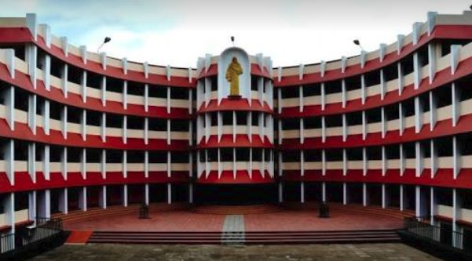

In order to make parents and children understand our school better, we have decided to update our school website, which will include videos and images of our school as well as how much our students consider this heavenly abode as their second home...
The audio given below is our school's song composed by our own talented musicians Jacob Daniel Ruben,Anagha DV, Marlina S and Shyam S Gopal.
Here is the image of the safe place your child learns and grows...
Here we have a short video of our school
In conclusion this is the end of our school updation.
We hope that we have made you understand atleast a little bit
more about our school.We have included videos , images and even audios
(music made by our students) to help you realise the value of this humble
abode.For more information about us, you can contact us via, email,
number(given on our website), or you can even directly come to our office.
THANK YOU AND HAVE A NICE DAY!